Hi, I’m Robin Mon Miranda, an aspiring web developer student enrolled in Uplift Code Camp. In this blog, I’ll briefly share how I created my very first browser game using my previous learnings of HTML, CSS, and basic Javascript from Uplift Code Camp.
My first day is of course for ideas. For me to gather ideas on different styles, mechanics, and concepts of most browser games available I spent hours browsing the internet for different games. Upon browsing and briefly playing different games I realized that almost all the games I can think of have already a browser version.
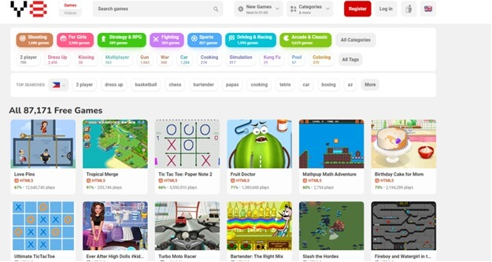Since I want my game to be not that common, I spent another couple of hours thinking of ideas after browsing online. Finally, after almost an entire day I decided to make a variation of the game Odd-One-Out after noticing one child answering a similar question but on paper.
After deciding on the game I want to create, I started sketching to have a general idea of what the UI will look like.
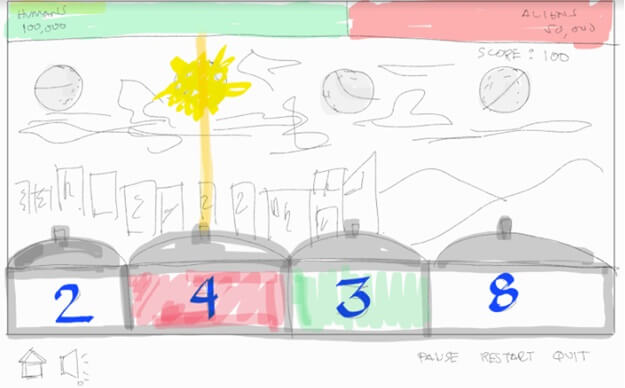For me to also decide on the dimensions, placements, figures, and the likes…
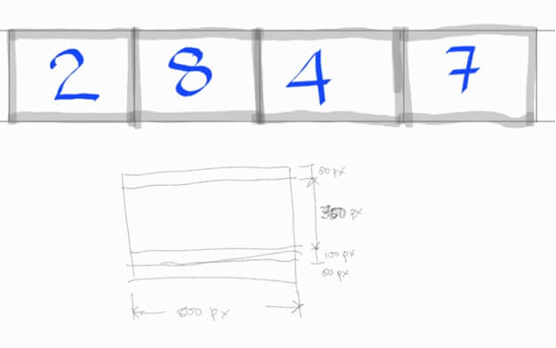After the initial sketches, I spent two nights learning about different JavaScript, html, and css concepts I think I might be needing to code the different functionalities of the game. Some of the topics I studied include animations in Javascript and CSS, creating objects, embedding audio, and making background images move.
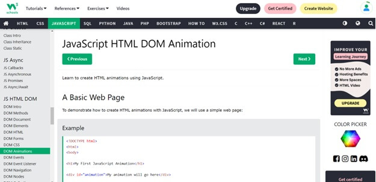Since I have a deadline, after learning those concepts I now opened my laptop and started writing codes. For the first phase, I focus on HTML and CSS and code the general layout.
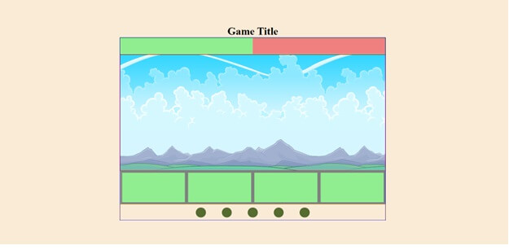I then added some game elements. At this phase, all elements are just static. I just wanted to see what will be the general look of the display.
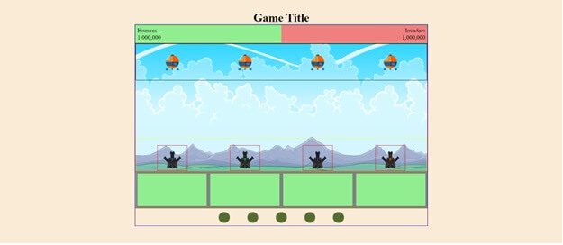When I started coding some logic in Javascript, console log is my bestfriend. At this early stage, as I build the codes I monitored what happens to variables for every function calls.
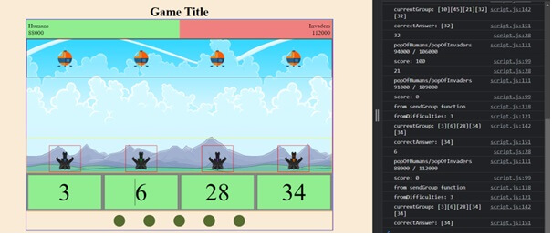Then, there comes the point where in I must implement animations to make the assets inside my game move. I can say that this is the start where I felt very challenged since it took me multiple tries and readings before I can implement even a very simple implementation needed. But this is also the start of the part, where I can say I learned so much since I have to.
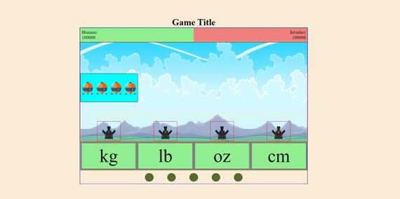Finally, I make the capsules fall. 😊
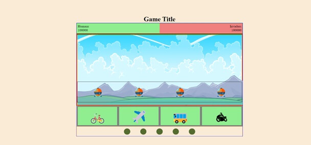The next thing I want to implement is to make them land at the back of the mountains. It’s the reason why I used a layered background image. By manipulating their z-indexes in css I made the capsule land on the back of the mountains in the background.
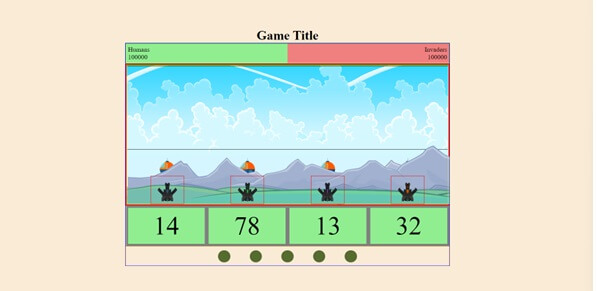I then started designing the display, deciding on colors, shapes, etc…
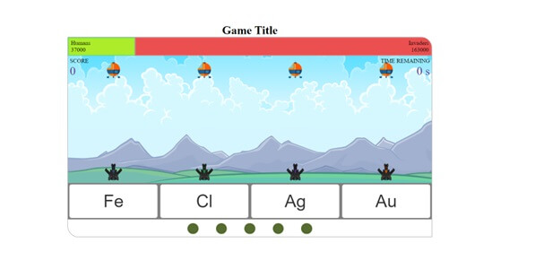Up to this point, I think I will be able to finish the project without any more major difficulties. But 1 day before the deadline this was proven wrong. I have difficulty updating the major functionalities, like making the elements coordinate with each other, updating the UI displays, and the functionality for each control.
That’s why...
I decided to rewrite my Javascript code….from line 1. ☹
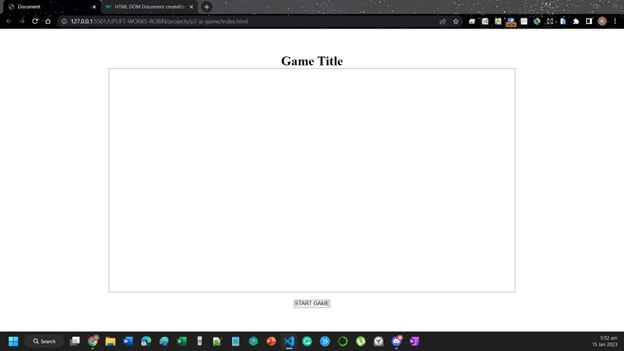 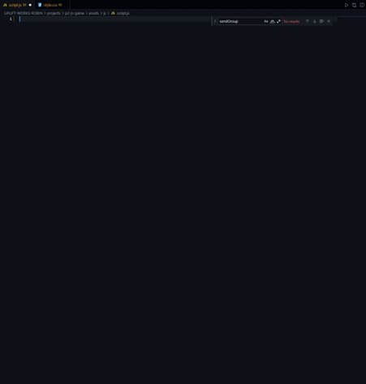To avoid my previous mistakes, I then decided to start with a more clear program flow. And for this, I came up with this diagram.
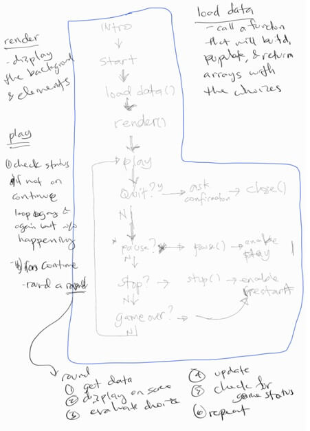After coding continuously for hours, while simultaneously learning how to implement certain functionalities, and searching for different methods that I can use to implement the functionalities I wanted….I finally able to code up to the point where I decided changing my implementations.
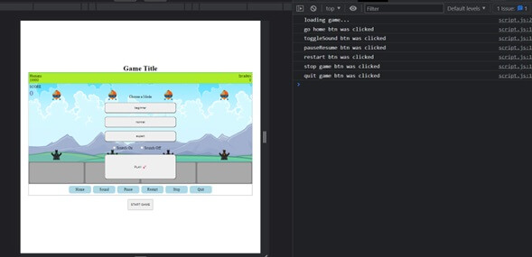After implementing some of the important functionalities, but without sufficient testing and validations. I decided to switch from designing the logic to designing the looks. I finalized the colors that I will be using, using the different colors in the background and this website.
It’s the final set of colors I’ve decided to use.
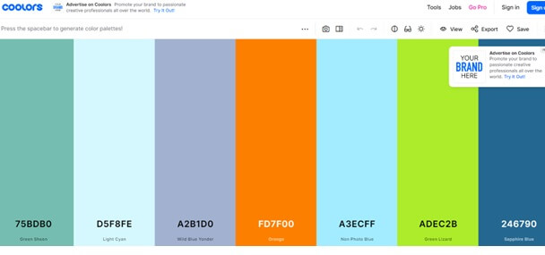Then I started designing the elements in my game.
After setting the colors and looks for majority of the elements in the display. I started searching for audio files.
Before I started this project, I learned how to embed audio files to html so the only thing that needs to be done was to have an audio file. And I got the one I used from this website.
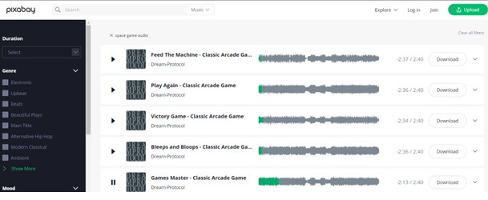After the audio files, I then started thinking of a story related to my game for me to create the introduction.
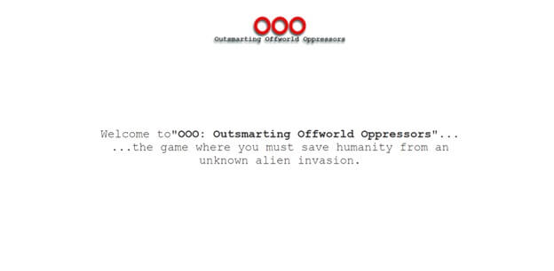Then, I integrate the introduction game together with the instructions.
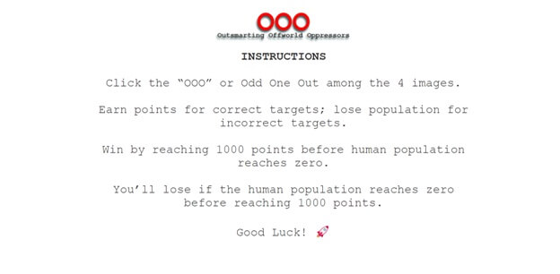 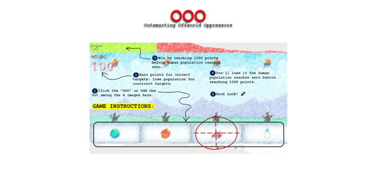Then comes the day of the deadline. For me there’s still more that I want to check, test, implement, and improve but I have to leave it to what it can do for now since I still have things to prepare for submission like hosting it on a hosting page, making a blog, etc.
At the time of writing this post, here is status of my very first browser game
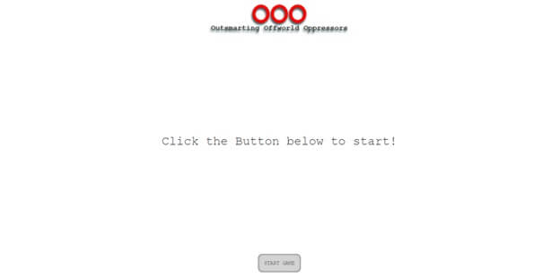 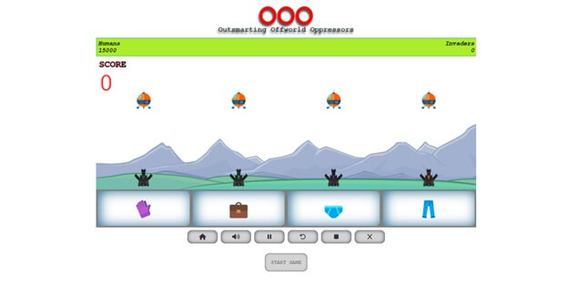 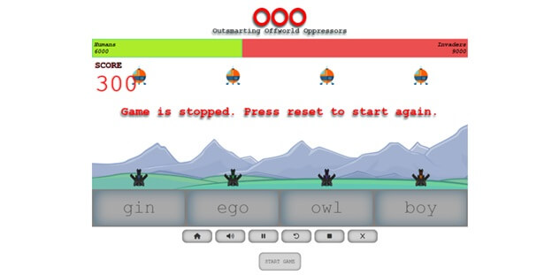 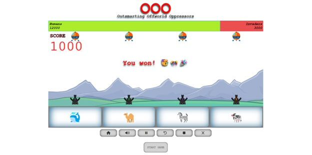You can experience it live at
In making this game, I encountered many challenging tasks. But those challenges tasks also thought me so many things and increased by so much my current knowledge in programming and web development. 😊